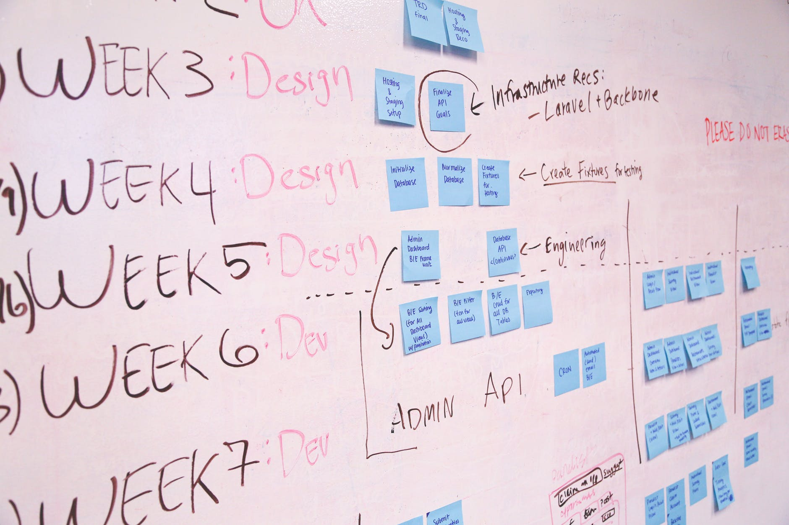

Повестка
рынки НТИ, повестка внутри рынков.
Как есть сейчас

сейчас недостаточно популярно внутри университета какие рынки выбрали: Автонет – бакалаврская программа по разработке беспилотника, бакалаврские и магистерские программы на транспортном факультете, участие и победы в профильных конкурсах Аэронет – магистерская программа по РБС и эргономике, индустриальные партнеры. Нейронет – научная лаборатория, проекты Эдунет – методические наработки по различным направлениям Сейфнет - проекты по защите персональных данных, Lightning Network Технет – цифровое проектирование и моделирование как совокупность технологий компьютерного проектирования (Computer-Aided Design, CAD), участие в конкурсе «Зимний город»
Как планируется в будущем
20% проектов по ПД посвящены НТИ
Эффекты
- развитие сотрудников, студентов
- возможность участия в новых конкурсах
- выход на международную арену
- разработка новых образовательных программ (в том числе ДПО)
- актуализация образовательных программ под запрос экспертного сообщества